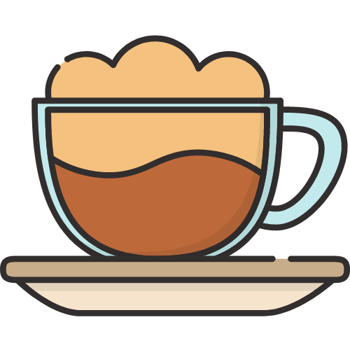
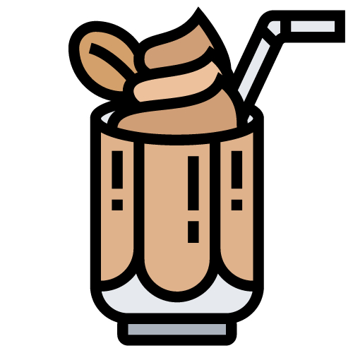

-
Espresso Espresso is a drink of small volume (25-30 ml or 1floz) with a rich, concentrated flavor, sharp aroma and slight bitterness. The drink is non-transparent and thick in consistency, and it is usually served in a small cup with a distinctive thick foam on top, also known as 'crema'.
Made with an espresso-machine by focing very hot water under high pressure through finely ground fresh coffee, espresso is the foundation for many other coffee drinks. -
Red Eye
 Red Eye is a drink that consists of brewed coffee topped off with a shot of espresso. Before double shots became the standard espresso pull, a Red Eye usually contained one shot while a “Black Eye” had two shots.
Red Eye is a drink that consists of brewed coffee topped off with a shot of espresso. Before double shots became the standard espresso pull, a Red Eye usually contained one shot while a “Black Eye” had two shots. -
Americano
 Americano is also known as American coffee. The term 'Americano' was coined during WWII when American soldiers diluted espresso with hot water trying to satisfy their preference for more sips of in a cup.
Americano is also known as American coffee. The term 'Americano' was coined during WWII when American soldiers diluted espresso with hot water trying to satisfy their preference for more sips of in a cup.
Traditionally Americano is made with a classical or double espresso and a considerable amount of hot water. The sequence of adding water or coffee to a cup is not essential, although if coffee is added to a water, then the drink retains a distinctive foam of espresso -
Late Macchiato
Latte Macchiato is a variation of a classical Latte where espresso is added to hot milk. It is prepapred as a layered drink with espresso carefully poured so that it forms a layer ebtween the denser liquid milk below and the lighter milk foam above
The presence of layers, a huge quantity of milk froth and a stain of milk (Ital.'Macchiato') on foam after pouring coffee are the main differences of this drink from a Cafe Latte -
Cappuccino
 Cappucino is, primarily, an exquisite balance of flavoes between the bitterness of espresso, the sweetness of hot milk and the sticky consistency of steamed-milk foam.
Cappucino is, primarily, an exquisite balance of flavoes between the bitterness of espresso, the sweetness of hot milk and the sticky consistency of steamed-milk foam.
Arguably the most important part in cappuccino is the milk foam. It cools the drink and yet allows it to retain its aroma.
Cappuccino is traditionally consumed hot and iwth no sugar (as it is replaced by the natural sweetness of milk) -
Flat White
 A comparatively new beverage created by baristas in Australia and New Zealand. The sense milk "microfoam" from the bottom of the pitcher is assed to a double shot of espresso and served in a small ceramic cup. The preparation is similar to that of Latte but the result is not as "milky", and the coffee taste comes through a lot more strongly.
A comparatively new beverage created by baristas in Australia and New Zealand. The sense milk "microfoam" from the bottom of the pitcher is assed to a double shot of espresso and served in a small ceramic cup. The preparation is similar to that of Latte but the result is not as "milky", and the coffee taste comes through a lot more strongly.
Even through this beverage will not appeal to everyone, Flat White is still prominently featured in coffee menus around the world. -
Cafe Latte
 Latte, also known as Cafe Latte, simply mean "coffee with milk" in Italian. it is a classical combination of one shot of espresso and steamed milk. The temperature of the milk is partly justified by the fact that Latte is a "fast food" dirnk and people have it on the go
Latte, also known as Cafe Latte, simply mean "coffee with milk" in Italian. it is a classical combination of one shot of espresso and steamed milk. The temperature of the milk is partly justified by the fact that Latte is a "fast food" dirnk and people have it on the go
If compared to cappuccino, which is renowned for its balance between coffee, milk, and foam, Latte is more defined by the sweetness of milk. -
Mocha
 Caffe Mocha (in North America also known as "Moccho") was created in response to general disatisfaction of chocolate fans with Cafe Latte.
Caffe Mocha (in North America also known as "Moccho") was created in response to general disatisfaction of chocolate fans with Cafe Latte.
It consists of a shot of espresso, milk and a layer of natural chocolate syrup. Black or white chocolate can be used in the drink depending on personal preference.
Cafe Mocha is usually dressed with chocolate shavings, cocoa, cinnamon and sometimes with marshmellows. -
Vienna
 Vienna Coffee has has an enormous popularity all over the world, and its recipe has been adapted and prepared in hundreds of ways.
Vienna Coffee has has an enormous popularity all over the world, and its recipe has been adapted and prepared in hundreds of ways.
The origins of this drink arequite uncertain and hazy, and interestingly the term was relatively unknown in Vienna.
The most common recipes for the drink is as follows: vanilla syrup, espresso, hot water and a cloud of whipped cream. -
Affogato An affogato or more traditionally known as "affogato al caffe" (Italian for "drowned") is an Italian coffee-based dessert. It usually takes the form of a scoop of fior di latte or vanilla gelato or ice cream topped or "drowned" with a shot of hot espresso.
Some variations also include a shot of amaretto, Bicerin, Kahlua, or other liqueur. -
Cafe au Lait
 The cafe au lait is typically made with French press coffee instead of an espresso shot to bring out the different flavors in the coffee. It is then paired with scalded milk instead of steamed milk and poured at a 50/50 ratio.
The cafe au lait is typically made with French press coffee instead of an espresso shot to bring out the different flavors in the coffee. It is then paired with scalded milk instead of steamed milk and poured at a 50/50 ratio. -
Cold Brew
 Cold brewing, also called cold water extraction or cold pressing, is the process of steeping coffee grounds in water at cool temperatures for an extended period. Coarse-ground beans are soaked in water for about 12 to 24 hours.
Cold brewing, also called cold water extraction or cold pressing, is the process of steeping coffee grounds in water at cool temperatures for an extended period. Coarse-ground beans are soaked in water for about 12 to 24 hours.
- Grind freshly roasted coffee beans (14 to 22 grams in the holder)
- Form a dense and smooth coffee tablet. Remove coffee particles from the surface of the holder and set it in the expresso machine
- Start the brewing process and pour 25 ml (1 fl oz) of the drink in each cup. The pouring time depends on various factors (~18 seconds)
- Serve the expresso in a small, preheated (but dry) cup with a glass of water
- Volume
- Caffiene
- Calories
- Proteins
- Fats
- Carbohydrates
- 30 L
- 75 mg
- 0 kcal
- 0 g
- 0 g
- 0 g
- Grind freshly roasted coffee beans (14 to 22 grams in the holder)
- Volume
- Caffiene
- Calories
- Proteins
- Fats
- Carbohydrates
- 30 L
- 75 mg
- 0 kcal
- 0 g
- 0 g
- 0 g
- Grind freshly roasted coffee beans (14 to 22 grams in the holder)
- Form a dense and smooth coffee tablet. Remove coffee particles from the surface of the holder and set it in the expresso machine
- Start the brewing process and pour 25 ml (1 fl oz) of the drink in each cup. The pouring time depends on various factors (~18 seconds)
- Serve the expresso in a small, preheated (but dry) cup with a glass of water
- Volume
- Caffiene
- Calories
- Proteins
- Fats
- Carbohydrates
- 30 L
- 75 mg
- 0 kcal
- 0 g
- 0 g
- 0 g